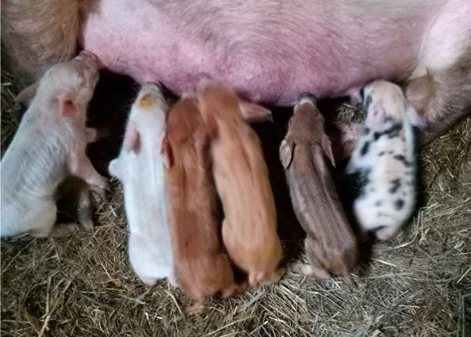

La Russie est très étendue et riche par sa beauté. Attirés par les feux brillants de grandes villes, les gens n’en prennent pas toujours pleinement conscience. Je regrette qu’il y ait peut-être mille endroits que je ne connais pas et autant de curiosités que je ne verrai jamais.
Le voyageur syrien Adnan Azzam, qui faisait sa route à pied de Damas à Moscou, a eu une chance de voir tout ce qui est caché à nos yeux. En plus, il a pu établir des contacts avec des personnes qui l’ont accueilli en réunissant non seulement le peuple russe et syrien mais également les Russes parmi les Russes. Ainsi Monsieur Vladimir Borev, Docteur en Philosophie, Docteurs ès Sciences de l'art, rédacteur en chef du journal « Conseiller du Président » et le premier membre russe de la Confrérie des chevaliers du taste-fromage de France. Francophone et francophile, il a voulu partager sa méthodologie de vie en exclusivité pour les lecteurs de « Méthode ».
Respect de l’histoire et de l’environnement
Un jour d’hiver j’ai pu visiter Maslovka, un petit village de quelques maisons nichées dans un endroit pittoresque sur la rive de Don. La ferme s'intègre parfaitement au paysage dont le propriétaire Vladimir Borev m’explique le terme « géoplastique ». Il a utilisé ce concept durant l’édification. Cela faisait longtemps qu’il cherchait un tel endroit pour réaliser son projet.
Frappé par la beauté de Maslovka, sans vouloir rien détruire et changer du panorama, il a souhaité respecter l’architecture ancienne et l’environnement. Son manoir a également conservé les caves de plus de 200 ans.
À l’intérieur, exceptionnel par son décor, on peut voir des objets qui nous font un rappel de différentes époques. Chaque période historique avait ses avantages et inconvénients. M. Borev a souligné que l’époque de Nicolas II fut remarquable grâce à ses reformes et l’augmentation de population de 60 millions habitants, tandis que l’époque soviétique a gratuitement offert la formation de haute qualité pour tout le monde.
Son souhait de faire renaître Maslovka a été apprécié par les autorités locales qui l’ont aidé en a contribuant à la réhabilitation des voies de communications. Une attitude qui fut fortement appréciée par les résidents du village.
Biculturalisme
Le français accompagnait Vladimir depuis l’enfance : sa mère était une traductrice et sa grand-mère connaissait parfaitement cette langue, ce qui était habituel pour les nobles familles de son époque. Le bilinguisme a donné beaucoup d’avantage dans sa carrière.
Pourtant c’est non seulement le bilinguisme qui est important dans l’éducation mais aussi le biculturalisme. C’est pouvoir comprendre la culture par les gestes, les émotions et les manières de réflexions à travers l’histoire et la mentalité. Cela donne une possibilité d’avoir une vision plus conséquente de la vie et des connaissances plus vastes sur celle-ci.
Ce biculturalisme s’exprime ainsi dans les projets de M. Borev. Par exemple, son manoir est composé de deux parties. Le rez-de-chaussée est en pierre dans le style d’un château français. Cette espace est réservée pour le travail. Et tous les autres étages sont en bois à la russe ce qui est plus convenable pour le repos et le sommeil.
Parmi ses nombreux projets, il y a ainsi la production de fromage à Maslovka selon les techniques françaises. Les techniques offertes par les experts français et le savoir-faire de l’agriculteur russe se sont parfaitement adaptés sur le terroir du village.
Chevaucher
Selon M. Borev, chevaucher c’est le meilleur dispositif d'entraînement pour gérer tous les processus. Toute la civilisation humaine fut construite par la coopération entre un homme et un cheval. Toutes les classes de gestion furent formées dans l’écurie : qui peut manier le cheval peut tout manier.
Vladimir va élucider cette philosophie dans son livre « 28 chutes » où il analyse sa vie par les chutes de cheval. Un morceau de ce livre est exclusivement présenté aux lecteurs de « Méthode » :
- Souvent te fois quand je traversais ma vie à travers le temps j’ai tombé du cheval et chaque chute pouvait être mortel et me rendre vers la tombe mais grâce à mon destin je suis toujours en vie et pour ça je veux prononcer un ancien toast de chevalier : « À nos chevaux, à nos femmes aux perrons de nos châteaux et à ceux qui le montent sans éperons ou avec éperons ».
- Pour boire le toast il faut du vin. Quel vin désirez-vous boire Monsieur ? Blanc, rosé ou rouge ?
- Pour moi, n’importe quel couleur, quoi qu’il soit rouge.
- Mais vous-même, Monsieur, vous êtes Blanc ou Rouge ?
- Moi, je suis Blanc, Bleu, Russe et je sais très bien que le cheval a toujours raison.
Indépendance et liberté
L’indépendance et la liberté c’est le credo de vie de Vladimir. Ce sont l’absence de chefs, la définition indépendante de son propre destin et la possibilité de réaliser une affaire souhaitée plutôt qu’un travail par nécessité, voire par obligation. L’Homme qui est le plus libre c’est l’artisan parce qu’il est avant tout un créateur.
D’origine de Moscou, M. Borev a compris que les conditions de vie dans cette ville étaient devenues insupportables. Dans les années 90, sans vouloir aller en politique pour se battre contre le capitalisme et le développement antihumain, où les bénéfices, par n'importe quel moyen, deviennent l’objectif principal, il a généré l’idée de s’installer dans une ferme pour créer un mode de vie alternatif pouvant lui assurer une existence psychologique, physique, morale et antichimique confortable.
Dans son manoir, il a pu synthétiser les avantages de la vie champêtre et de l’urbaine : la vie intellectuelle et culturelle en pleine communion avec la nature.
En reniant le système bancaire contemporain, M. Borev refuse les crédits en demeurant persuadé que chaque projet peut être développé sans. Les crédits au contraire aggravent votre situation : vous devenez un esclave de ce système en ne travaillant plus pour le projet mais pour faire les paiements et rembourser votre crédit. En outre, il ne faut pas nécessairement apporter de contributions bancaires : il faut contribuer à la terre, aux vaches, aux chèvres… Cela peut vous donner de 400 à 600 % de croissance par an.
Repas sain
Le repas sain devient de plus en plus un luxe qui, semble-t-il sera bientôt réservé aux personnes les plus riches, mais chaque personne peut s’en assurer soi-même. La ferme donne toutes les possibilités d’avoir les produits les plus naturels et salubres. La variété alimentaire que vous voyez aux supermarchés est bien souvent nuisible pour l’organisme humain.
L’industrialisation du secteur agroalimentaire a été une vraie tragédie pour le pays. Par exemple, en 1936, durant les campagnes de collectivisation, les kolkhozes ont été formés.
Le développement intensif de l’élevage de vaches a provoqué les maladies, c’est pourquoi le bouillage et ensuite la pasteurisation du lait sont devenu indispensables. Le résultat c’est le mort des lactobacilles. Nous avons été ainsi privés des vertus curatives des produits lactés, et l’homme, dans sa catégorie de mammifère, a besoin de bénéficier de toutes les vertus du lait.
Vladmir respecte les techniques anciennes. Il dit que ce que l’on n’économise pas dans la qualité des produits de notre alimentation, on l’économise en chimiothérapie. Son lait est un lait des prés traité à la main. Son fromage, provenu de ce lait, est affiné 6-12 mois et riche par ses effets curatifs.
M. Borev développe toujours ses méthodes pour d’autres types de produits aussi. Aujourd’hui il a un succès avec la production du fromage, du beurre, du chocolat et du pain authentiques et prochainement il va lancer la production du jambon ibérique.
Parmi ses créations il y a également le fromage fluide qui représente une teinture de lactosérum et d’herbes.
Quelque soit son produit, il suit le proverbe français : si vous ne voulez pas que les remèdes deviennent votre repas, faites ainsi que votre repas devienne vos remèdes.
Développer une méthodologie
L’Homme doit posséder des connaissances intégrales et universelles. Ici la méthode artisanale a le plus grand atout. M. Borev a fait du journalisme toute sa vie mais il a pu réussir dans son projet agricole.
Le but principal de la vie est l’apprentissage et la conception de soi-même. À partir de n’importe quel projet, il faut respecter la bonne méthodologie qui repose sur deux réflexions : le succès du projet et le concept que l’Homme peut tout.
Vladimir utilise la méthodologie créative de vie dont la base est la construction du succès et la négation de la chance, mais, en niant la chance, nous croyons au miracle. Pourtant chaque miracle doit être anticipé, prévu et supporté.
N’importe quel petit succès doit être doublé et mis à l’échelle. Tandis que n’importe quel échec a des causes qui doivent être analysées et servir d’aire de lancement pour aller vers un succès. L’armée la plus faible est celle qui a remporté la grande victoire tandis que la plus dangereuse est celle qui a été battue mais pas annihilée.
Il faut beaucoup travailler mais en même temps ne rien faire, c’est-à-dire ne pas intervenir dans un processus, mais œuvrer pour que ce processus se réalise parfaitement parce que la nature est toujours plus intelligente que nous.
Il faut vivre fondamentalement et aisément sans que processus devienne le travail d’un esclave aux galères ou de Sisyphe qui roule continuellement sa pierre dans la montagne.
Il y a trois processus : envisager, réfléchir et rêver.
Envisager – il faut le faire très vite - aurais-je le temps de traverser la route devant la voiture ?
Réfléchir – il faut le faire très lentement – comme dans l’état-major général : obtenir toutes les informations d’investigations, les analyser, vérifier, modéliser les différentes situations. C’est un processus lourd et fondé.
Il faut réfléchir dans un sommeil. C’est pourquoi on se souvient de tous les détails de la journée passée, on planifie le lendemain et on rêve obligatoirement de ce qu’on aura dans 15-20 ans, en construisant une ligne de trois repères : aujourd’hui, demain et dans 20 ans. Le savoir-faire de rêver et de concrétiser les rêves c’est le principal dans l’art de vivre. Et Vladimir Borev ne semble renier aucun de ses rêves...
E.S.
Retrouver les productions agricoles et les activités de la ferme de Vladimir Borev sur son site :
http://масловка.рф
ou sur les réseaux sociaux :
https://vk.com/maslovka48
Par ailleurs, les agriculteurs français ou artisans agricoles qui souhaiteraient se développer en Russie peuvent prendre attache avec M. BOREV ou contacter la revue Méthode.
Partager cette page